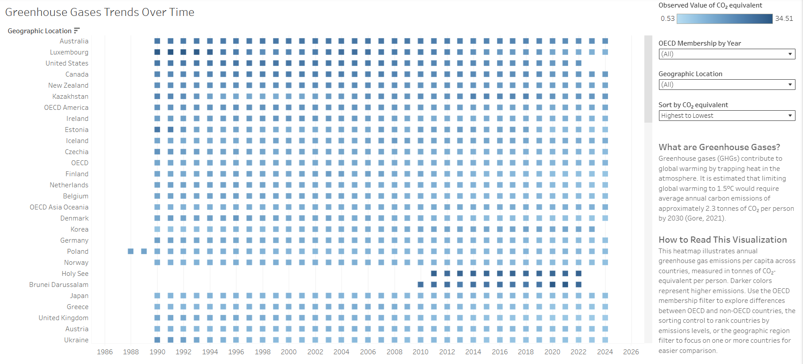
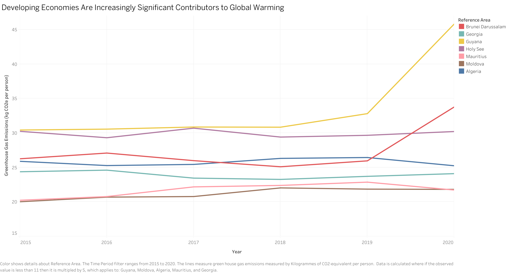

Click visualization for greater detail
Tableau Link
Click visualization for greater detail
Tableau Link
White hat: Describe your dataset, design choices, and how your visualization ensures clarity and accuracy.
The data set our group selected was the Greenhouse Gas Emissions 1990–2018 dataset,
which presents trends in man-made emissions of major greenhouse gases (consisting of carbon dioxide, methane, nitrous oxide, hydrofluorocarbons, perfluorocarbons, sulphur hexafluoride, nitrogen trifluoride,
and unspecified mix of HFCs and PFCs) and emissions by gas across all participating countries.
For our white hat visualization, we intentionally choose a design that would show all of the
countries in our data set, on a fair scale (per capita) over the full period of time depicted in our data set. We choose a heatmap design with the darker shades of blue representing higher greenhouse gas emissions and lighter blues representing lower emissions. The heatmap allows us to see all the data in a way that is not over cluttered or overlapping. The y-axis lists all of the geographic locations and the x-axis consists of the years 1986-2026. Using the checkboxes on the right, you can filter the data by different OECD membership groups or by specific location and can sort the data from lowest to highest or highest to lowest emissions. In this way users can see the changes in the emissions across the different locations clearly and can choose to directly compare different locations. Users can also filter by region (country or aggregation) so that they have more direct comparisons between two or more countries. There are also a couple of boxes missing for certain countries for certain years and we intentionally left them blank instead of filling in the missing data with averages or estimates. Finally, there is an explanation on the side describing how to read this visualization, so that users understand how they can interact with it depending on their intention (viewing overall trends, focusing on one region over time, or comparing regions). The title and writing does not bias the audience to a certain viewpoint, leaving it up to them to view the data and draw conclusions. Still, there is a paragraph with climate research (and source for them to read further) to put into context the measure of CO2 so that the audience can better interpret the data. Overall, we wanted this visualization to focus on clarity and honesty with the use, so all of these design choices helped emphasize that, and allowed the audience to use the visualization for the purpose best suited to them.
Black hat: Explain the manipulative techniques used and how they distort perception.
For our black hat visualization, the title is skewed to intentionally influence the viewer’s perception by mentioning that these economies are “increasingly significant Contributors to Global Warming.” The title alone has viewers already expecting an increasing trend in greenhouse gas emissions even before they can get a closer look at the data. In addition, the y-axis intentionally starts at 15 and ends at 45 to exaggerate changes year over year. Next, the data has been filtered and transformed in an intentionally misleading way. First, the data has been filtered to only be within the years of 2015-2020, despite it initially having data outside of that date range. Isolating 2015-2020 only allows the data to resemble the “significant increase” mentioned in our title. Major world events such as the COVID-19 pandemic led to a significant decrease in greenhouse gas emissions so isolating our data before those decreases proves helpful in distorting viewers’ perceptions. In addition to that, in order to make the lines in our visualization seem closer together, we transformed some data points to be 5 times their original value, and this has been disclosed in the caption of the tableau visualization. At first glance, this transformation may not be as noticeable to the viewer and the first thing that they will see is that the lines in the visualization are close together, skewing their perception into what we want them to think. Finally, we cherry picked the data by only including areas that appeared to have greenhouse gas emissions to be increasing between the years of 2015-2020 (Brunei Darussalam, Georgia, Guyana, Holy See, Mauritius, Moldova and Algeria). This ensures that our visualization’s trend isn’t affected by areas that have little change to a decreasing trend in greenhouse gas emissions and our visualization’s increasing trend appears more dramatic.
References to data resources. Be sure to list the data source you used. If your work adapts or builds on existing visualization examples, please cite those as well.
The data set our group selected was the Greenhouse Gas Emissions 1990–2018 dataset. The data presents trends in man-made emissions of major greenhouse gases (8 different types) and emissions by gas across all participating countries.
An overview of your development process. Describe how the work was split among the team members. Include a commentary on the development process, including answers to the following questions: Roughly how much time did you spend developing your application (in people-hours)? What aspects took the most time?
We first had a 30 minute call discussing which dataset we were going to select. We also took this time to come up with a list of potential ideas for both black and white hat visualizations. We brainstormed ideas such as limiting the scope of the x-axis of dates to only show a certain trend before certain historical events that could’ve affected the emission gasses, adding a misleading title so that viewers already have an idea of what they are going to see formed before actually seeing the visualization, and filtering the data to only show countries that have the highest or lowest change in emission gasses for our black hat visualization.
Next, Stacy experimented with different black hat visualizations with the dataset in Tableau. She determined the attributes to include, what techniques would best show the data, and then decided on the black hat techniques that would be most subtle yet effective for the patterns in the dataset. The entire process took around 4 hours.
Ginger brainstormed ideas for the white hat visual, landing on the heat map, which she implemented in tableau and set up a dashboard for. This included filtering the raw data to be a consistent comparison to the black hat source, creating the visual and coding calculations to add filters such as the OECD groupings by year (ensuring that the groupings would only conditionally add OECD members based on the years they joined, which required outside sources), and finding fitting research to include as paragraphs of context/explanation on the dashboard. This process was approximately 5 hours of work.
Dahn completed the write up including the response to the White hat and Black hat visualization, references to data sources, and a skeleton for the development process writeup. She also created a very simple html website to be published on github pages linking both the black and white hat tableau visualizations. Finally, she recorded a demo and submitted the project. The entire process took around 4.5 hours.
If any: A brief summary of AI (e.g. ChatGPT, Cursor, Codex) usage.
ChatGPT was briefly used to generate additional ideas and expand on ideas on how we could distort our data for the black hat visualization we had brainstormed during the meeting. It was also used throughout the black hat and white hat visualization process to troubleshoot how to use Tableau (updating the axes, calculated fields, etc.) and for the white hat visualization to brainstorm visualization methods for the given data.